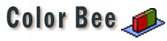

|  | |
|
Tips |
||||||
|
|
Double click to add and watch colors Do you know? You can also double click on the Color Model, Grab Color, or Swatch Library panel to add selected color into your palette. You can also double click on a selected color on your palette to watch its color value. Back to top |
|
Swatch/Palette size Do you know? When colors on your palette are generally light colors, set palette size to big will give you closer idea about how it will look when the color is in used. Back to top |
|
Test text colors Do you know? Try the Wrting texts tool on the Text Board when you are looking for an idea color for texts, the result will usually look different than they way you feel by just looking at the color swatch on your palette. Back to top |
|
Pause the zooming then select.. Do you know? Although you can add color into Zoom Window by using the hotkey of Grab color, it will be easier to pause the zooming first and select color inside the Zoom Window afterward. Back to top |
|
Swapping colors Do you know? The purpose of swapping color is for correcting selected color or comparing it with other colors on your palette. Back to top |
|
Use my palette outside.. Do you know? Export your palette to bitmap, and open it in the painting program you use. Therefore, you can sample color from your own palette in another program. Back to top |